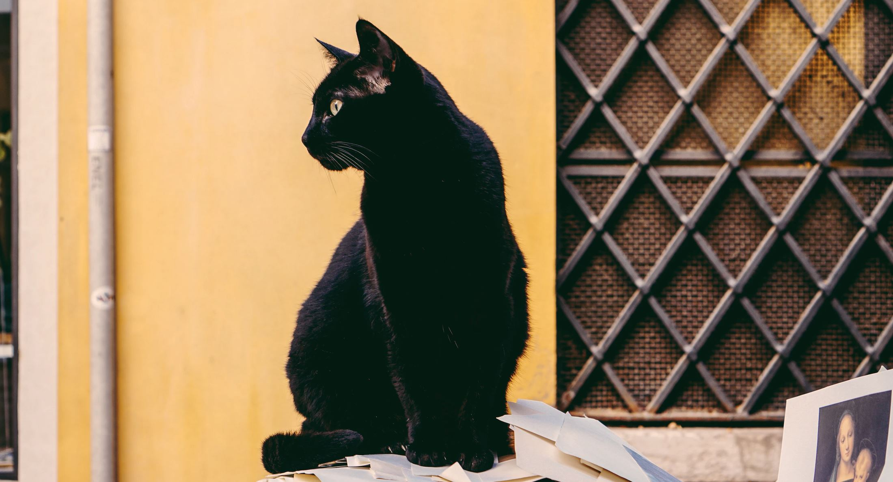

DeepSkyBlue
HEX
RGB
RGBa
HLS
HSLa
Hello Cats!
I love cats and I have this idea to build a Cats Website. :D
Favorite Cat
Photo by Nathan Riley from https://unsplash.com/@nrly
 A black cat is a domestic cat with black fur that may be a mixed or specific breed, or a common domestic cat of no particular breed. The Cat Fanciers' Association (CFA) recognizes 22 cat breeds that can come with solid black coats.[1] The Bombay breed is exclusively black. All-black fur pigmentation is slightly more prevalent in male cats than female cats. Their high melanin pigment content causes most black cats to have yellow (golden) eyes (irises).
Test for fun! Can this be blue as well?